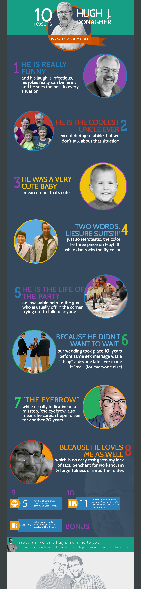

<nav id="main_menu" class="sticky-menu">
    <ul class="menu scrolling-links">
        <li><a href="index-pjax.html#home">Home</a></li>
        <li><a href="index-pjax.html#about">About</a></li>
        <li><a href="index-pjax.html#places-lived">Places</a></li>
        <li><a href="index-pjax.html#timeline">Timeline</a></li>
        <li><a href="index-pjax.html#connections">Connections</a></li>
        <li><a href="index-pjax.html#chico">Chico</a></li>
        <li><a href="index-pjax.html#charts">Data</a></li>
        <li><a href="index-pjax.html#hugh-sec">Hugh</a></li>
        <li><a href="index-pjax.html#infographic">Infographics</a></li>
    </ul>
</nav>

<section id="tenreasons" >
    

</section>

<footer id="footer" class="general_bg">
    <div id="backtop">
        <i class="icon-angle-up"></i>
    </div>
    <p class="copyright">© 2013 Brian Rountree. All rights resevered.</p>
</footer>
